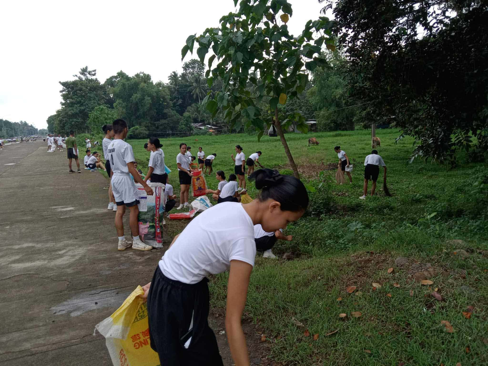
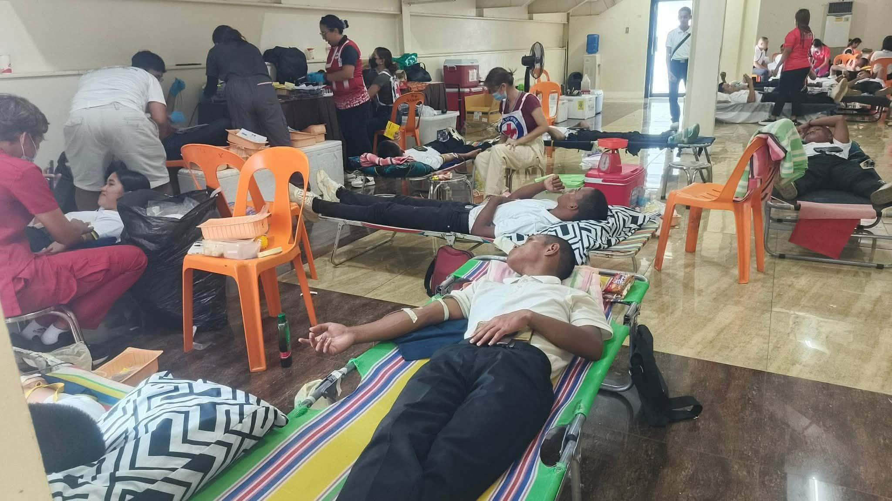
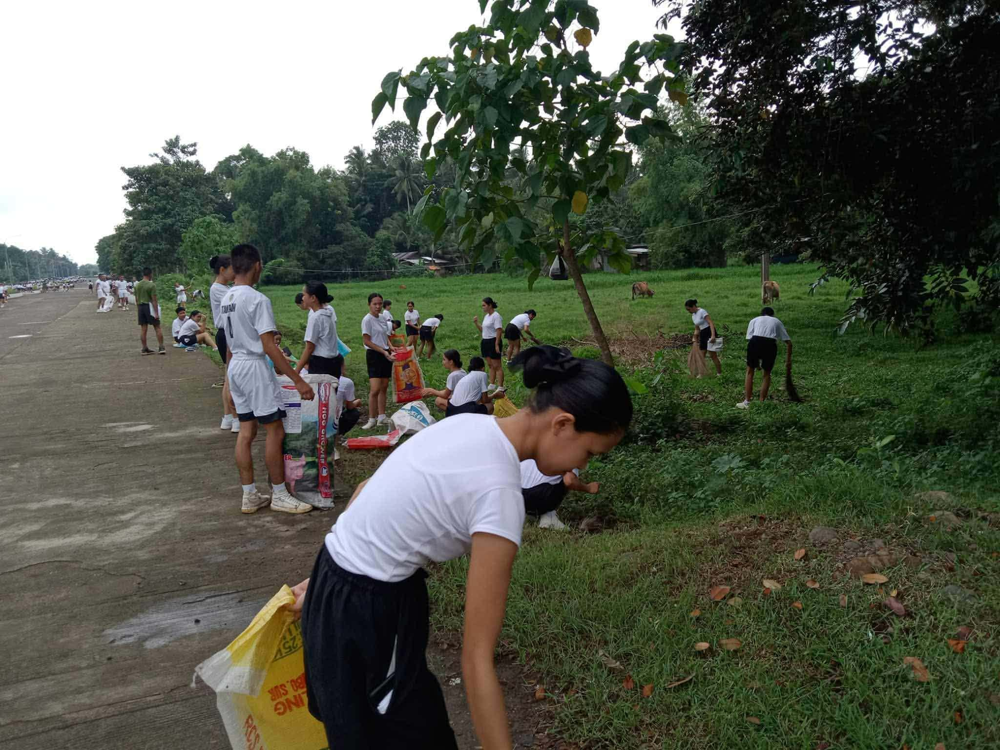
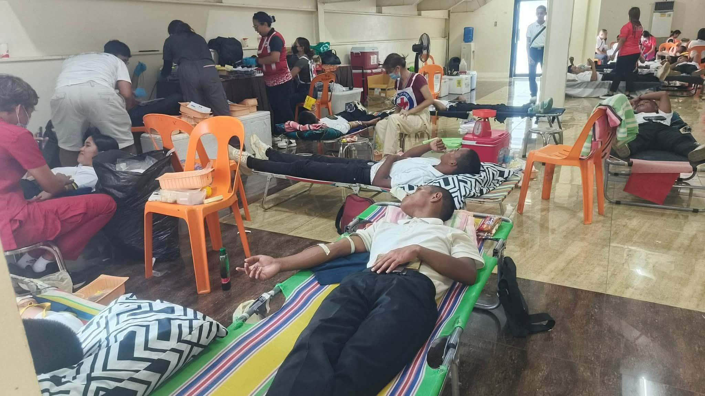

.jpeg)
Understanding Myself!
There are a lot of things I’ve reflected on in my life, and one of them is understanding myself. At first, I honestly thought that knowing who I am was something automatic like I should already understand my feelings, my actions, and my thoughts just because I live with them every day. But as I started learning more about Understanding the Self, I realized that discovering who I truly am is not something that happens instantly. It is a slow, ongoing journey that takes patience, honesty, and openness.
This subject taught me that the self is not fixed. I am not the same person I was last year, last month, or even last week. Every experience I go through whether it’s a small accomplishment, a big mistake, a moment of joy, or even a painful memory shapes me in ways I never expected. Sometimes I only understand the lessons much later, when I take time to reflect. I learned that even the moments I try to forget are part of what makes me who I am today.
Through this reflection, I also became more aware of my emotions. I used to ignore or hide what I felt, thinking that it made me strong. But I realized that true strength comes from being honest with myself. It’s okay to feel sad, confused, angry, or overwhelmed. These emotions don’t mean I am weak they mean I am human. By understanding what I feel and why I feel it, I can react more calmly, make better choices, and avoid hurting myself or others.
Another important thing I learned is that understanding myself helps me connect better with people. When I know my strengths, I learn how to use them in a positive way. When I accept my weaknesses, I know what I need to work on and when I need help. This makes my relationships healthier because I become more patience, more open, and more understanding. I also learned that people reflect parts of myself back to me sometimes they show me who I am, and sometimes they show me who I want to become.
This subject also encouraged me to think about my identity not just who I am now, but who I want to be in the future. I realized that I have the power to shape my own life. My choices, my habits, and my mindset all contribute to the kind of person I am becoming. Understanding myself helps me make decisions that align with my goals and values, instead of just doing what others expect from me.
Most importantly, I learned that understanding myself is not a final destination. There is no point in life where I will suddenly know everything about who I am. I will keep changing, keep learning, and keep growing and that’s okay. What matters is that I continue to explore my thoughts, listen to my feelings, reflect on my actions, and stay true to the person I want to be.
In the end, Understanding the Self reminded me that life is not just about achieving things, it is also about understanding the person who is achieving them. And as long as I keep learning about myself, I can continue to grow into someone wiser, kinder, and more confident. This journey is not easy, but it is one of the most important journeys I wil ever take the journey of knowing myself.

.jpeg)
 


